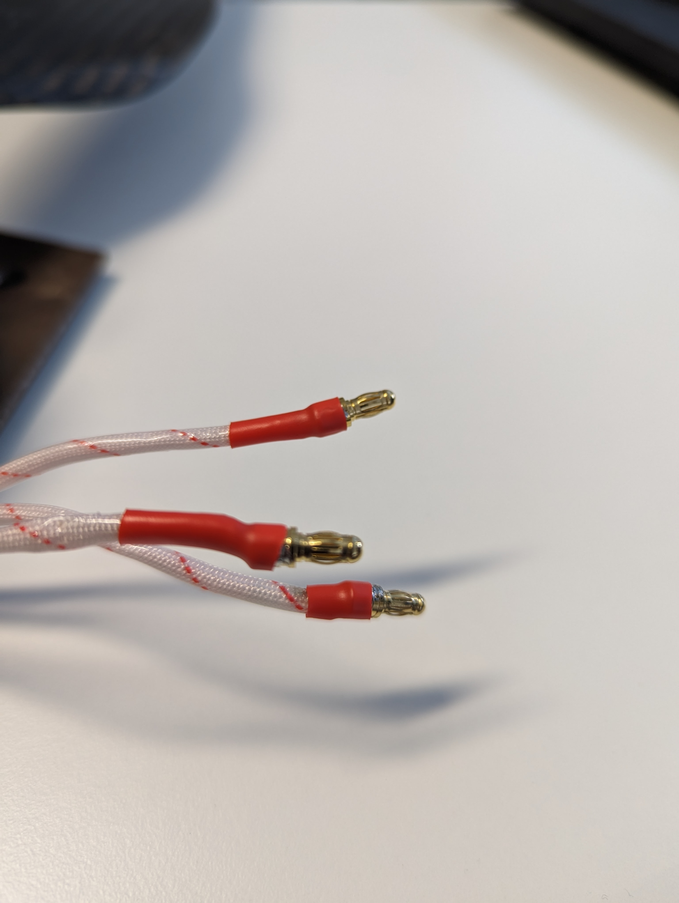
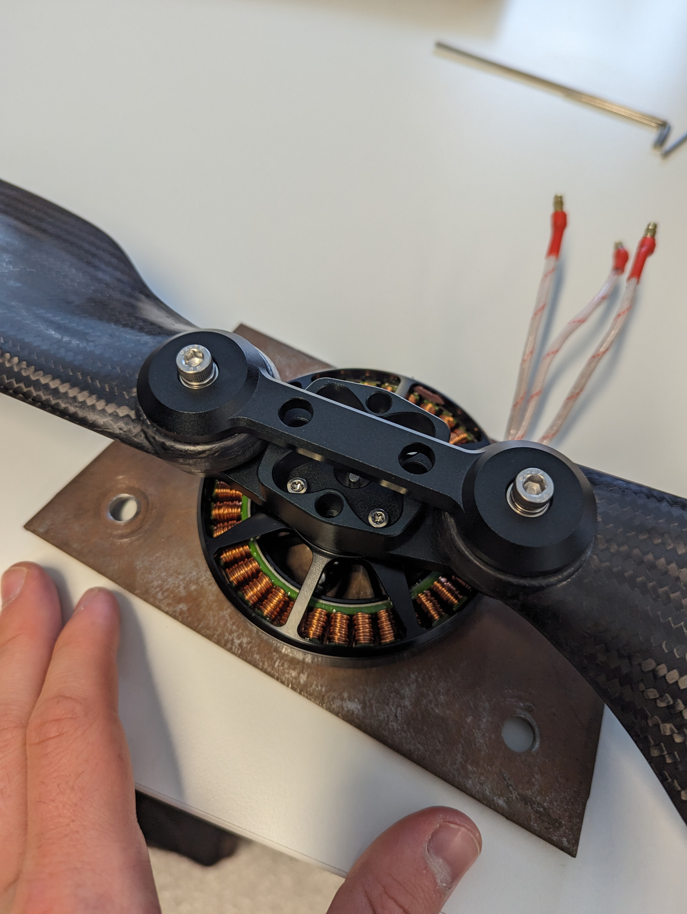
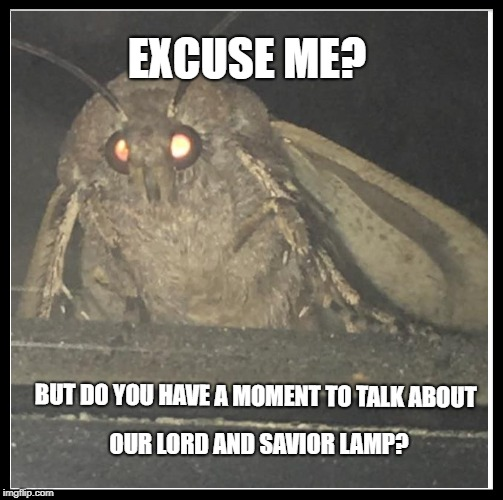
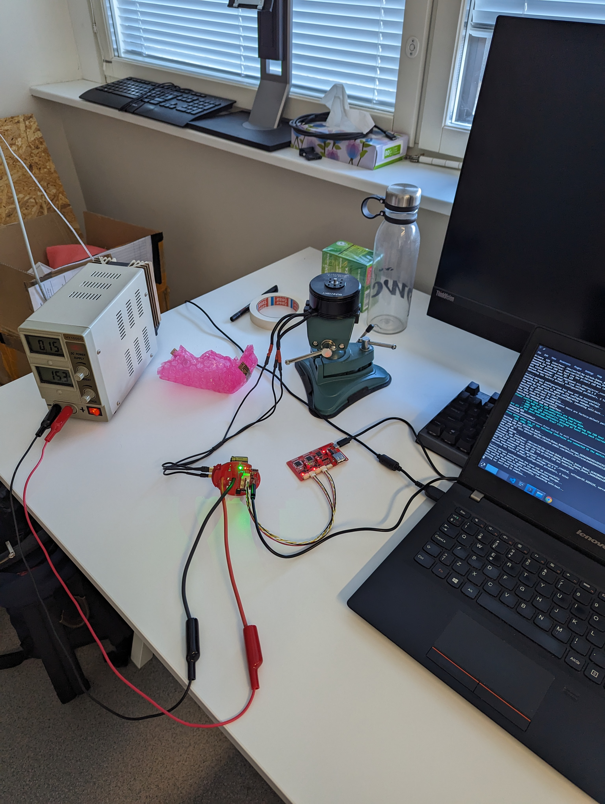

New start into the week!
My coming week should bring in some new variety into my tasks.
Nunaweb was still waiting for completion, as the changes I made over the weeks had to be approved and merged into the main branch.
spoiler alert for the fans of The Nunaweb plotline: It won't die off anytime soon :)
But on the horizont, there lay a new hope. This hope came in form of a package which I had to pick up from the airport.
Sometimes I wish live would deliver more goodies on this way, with fast shipping and ready to be picked up whenever you are.
This time the package was a new motor of a customer which had to be tested for compatibility with our hardware and software.
First I had to solder the end pieces of the cables to fit with Zubax Komar devices.
 Then I mounted the motor on a metal plate, which would be screwed onto a massive rig in order to be tested later. Even though the motor doesn't seem that big the wind force generated through would be strong enough to set the whole room into chaos and destroy a lamp.
 RIP at this point for the lamp which sacrificed itself for the furtherment and development of society and real-time intravehicular distributed computing.

Monday-Tuesday, July 17th-18th
Cool bikes in Tallinn
I really don't know why, but Tallinn is full of cool retro bikes.
This is suprising to me because the city really isn't nice to cycle in.
Most streets clearly prioritize cars over bikes, something most eastern countries have in common and which I personally hate.
Streets are not to human scale, bike paths abruptly stop existing and traffic light phases are clearly skewed in favor of cars and take way too long to change.
But still, a nice bike :)

Wednesday, July 19th
Lasers, Testing and Inventory
I know what you think: "What an interesting title that is, surely this will be very intriguing!" and you would be right!
I learned how to use a laser cutting machine in order to cut acrylic glas forms for our engineer, which took couple of tries.
This is because of the characteristic of glas to break the moment you even dare to move it a little to much in a direction it doesn't like... And let me tell you that this glas didn't like my favourite directions.
During testing the light of the Komar and Babel devices would start flashing, the motor would turn a little for one moment and the script would show an correct output. If all requirements would be met, the device would be considered as working.

Wednesday-Friday, July 19th-21th